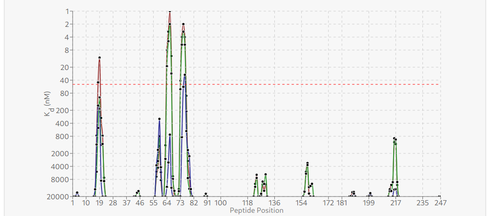

Immunodom
Immunodom is a tool that identifies and evaluates immunodominant peptides binding to HLA molecules more efficiently. By leveraging the Immune Epitope Database (IEDB) and enhancing data presentation and usability, the project seeks to streamline the research process, reduce time and labor, and ultimately contribute to actionable research outcomes in the fields of autoimmune diseases, vaccine development, cancer immunology, and infectious disease control. I am responsible for developing the new desktop version of the app, which aims to leverage the New-Gen IEDB API, reduce load times, and build on the original to become a more usable application.
TypeScriptReactElectronREST APIsDesktop App